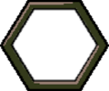
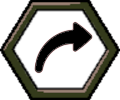
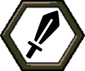
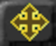
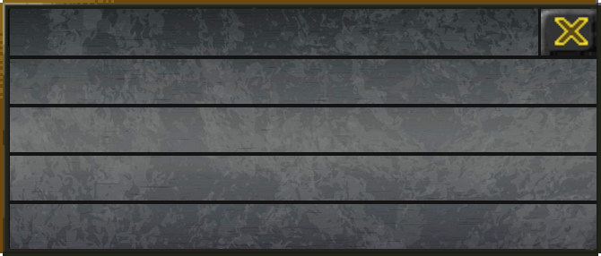
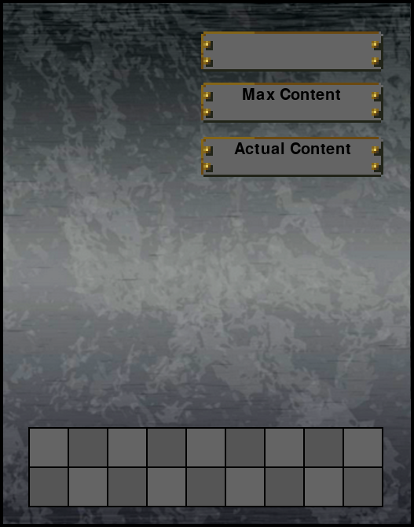
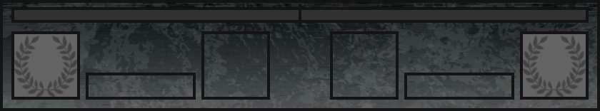
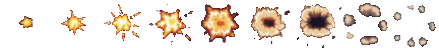

Ownership atlas

Retained offline candidates, not runtime-accepted replacements. New text-free slate/brass vectors follow the unit-panel pilot; weapons and explosion use the continuous painted treatment. Existing reference images are linked only for local comparison; no reference pixels enter export builds. Approximately90% visual resemblance after Lanczos reduction remains a visual approval target, not a computed percentage.
Open complete candidate gallery and effect playback · Contract / verification / open work · Bindings and geometry
















 bayonet
bayonetUntouched master · Exact built-in generation prompt / source pins · 4×
 sabre
sabreUntouched master · Exact built-in generation prompt / source pins · 4×
 trenchKnife
trenchKnifeUntouched master · Exact built-in generation prompt / source pins · 4×
 revolveur
revolveurUntouched master · Exact built-in generation prompt / source pins · 4×
 lugerp08
lugerp08Untouched master · Exact built-in generation prompt / source pins · 4×
 gewehr98
gewehr98Untouched master · Exact built-in generation prompt / source pins · 4×
 leeEnfield
leeEnfieldUntouched master · Exact built-in generation prompt / source pins · 4×
 maxim
maximUntouched master · Exact built-in generation prompt / source pins · 4×
 wickers
wickersUntouched master · Exact built-in generation prompt / source pins · 4×
 feldkanone16
feldkanone16Untouched master · Exact built-in generation prompt / source pins · 4×
 m1902
m1902Untouched master · Exact built-in generation prompt / source pins · 4×
 lefh
lefhUntouched master · Exact built-in generation prompt / source pins · 4×
 canon75
canon75Untouched master · Exact built-in generation prompt / source pins · 4×
 morser
morserUntouched master · Exact built-in generation prompt / source pins · 4×
 canon155
canon155Untouched master · Exact built-in generation prompt / source pins · 4×



Exact generation prompt. No reference pixels were provided for this new painted sequence; the nine-stage progression is described by the prompt. Hit uses a newly authored vector skull with a separate live loss count, plus a static reduced-animation ring.